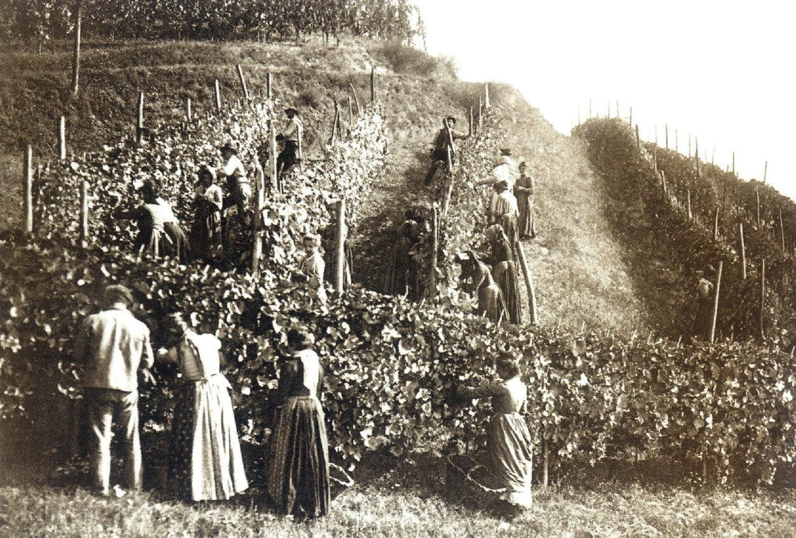

Nossa História
A Vinharia Agnello surgiu a partir de uma paixão pelo universo dos vinhos e pela vontade de criar um espaço onde as pessoas pudessem conhecer, experimentar e apreciar diferentes tipos de vinho. Desde o início, a ideia foi muito além de oferecer garrafas: buscamos criar uma experiência que aproximasse nossos clientes da cultura e da tradição do vinho.
O projeto da Vinharia Agnello começou com a valorização de uma ideia simples: cada vinho possui uma história. Por trás de cada garrafa existem diferentes regiões, tipos de uva, formas de produção e pessoas que dedicam seu trabalho para transformar esses elementos em uma bebida especial.
Com o passar do tempo, a Vinharia passou a construir sua identidade baseada em três pilares: qualidade, tradição e experiência. Acreditamos que conhecer um vinho também significa conhecer sua origem, entender suas características e descobrir novas formas de apreciá-lo.

O início da nossa trajetória
No início da trajetória da Vinharia Agnello, o principal objetivo era criar um ambiente acolhedor para pessoas que já conheciam o mundo dos vinhos e também para aquelas que estavam começando a descobrir esse universo.
Por isso, buscamos apresentar os vinhos de maneira acessível, permitindo que cada cliente pudesse encontrar um rótulo de acordo com seus gostos e preferências. Acreditamos que não é necessário ser especialista para apreciar um bom vinho.
Valorizando a cultura do vinho
A cultura do vinho está presente em diferentes partes do mundo e possui uma história marcada por tradições que atravessam gerações. Na Vinharia Agnello, valorizamos essa diversidade e buscamos apresentar aos nossos clientes diferentes estilos, sabores e possibilidades.
Mais do que conhecer uma bebida, queremos incentivar a descoberta. Cada novo rótulo pode representar uma oportunidade de conhecer uma região, uma uva ou uma forma diferente de produção.
Uma experiência para cada momento
Ao longo de nossa trajetória, a Vinharia Agnello passou a enxergar o vinho como parte de diferentes momentos da vida. Um jantar em família, uma comemoração entre amigos ou simplesmente um momento de descanso podem ganhar um significado especial quando compartilhados com um bom vinho.
É essa combinação entre tradição, conhecimento e bons momentos que representa a essência da Vinharia Agnello. Nosso propósito é continuar criando experiências e ajudando cada visitante a descobrir um pouco mais sobre o fascinante universo dos vinhos.
O futuro da Vinharia Agnello
Hoje, continuamos olhando para o futuro sem deixar de lado os valores que deram origem à Vinharia. Buscamos acompanhar as novidades do mercado, conhecer novos produtores e ampliar as experiências oferecidas aos nossos clientes.
Acreditamos que nossa história está sempre sendo construída. Cada pessoa que conhece a Vinharia Agnello, cada vinho descoberto e cada experiência compartilhada faz parte dessa trajetória.